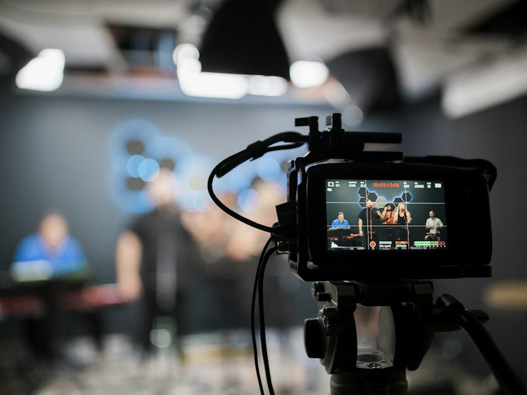

Reels toʻplami
Instagram va TikTok uchun
- 4 ta qisqa video (Reels)
- Montaj, musiqa, titrlar
- Rangni tuzatish
- 9:16 format
400 000 soʻm
ish haqi
Tanlash
Buxoroda video montaj va color grading
DaVinci Resolve · Premiere Pro · After Effects · Photoshop
Video montaj, rang bilan ishlash va motion grafika. DaVinci Resolve, Premiere Pro, After Effects va Photoshop’da 10 yillik tajriba.
Asosiy xizmatlar. Roʻyxatda yoʻq ish boʻlsa ham yozing — maslahat beraman.
Premiere Pro’da reklama, YouTube va tadbir videolari.
DaVinci Resolve’da color grading: kadrga kayfiyat va bir xil rang.
After Effects’da titrlar, logotip animatsiyasi va infografika.
Photoshop’da retush, fon almashtirish va reklama bannerlari.
Ijtimoiy tarmoqlar uchun vertikal qisqa videolar.
Toʻy, tugʻilgan kun va korporativ tadbirlar montaji.
Haqiqiy loyihalar rasmlari shu yerga qoʻyiladi.

Namuna Namuna
NamunaTayyor paketni tanlang yoki alohida xizmat buyurtma qiling. Aniq narx vazifani koʻrgach aytiladi.
Instagram va TikTok uchun
Mahsulot yoki xizmat reklamasi
Sahifani doimiy yuritish uchun
Alohida xizmatlar: Video montaj — 100 000 soʻm (1 daqiqa uchun) · Color grading — 200 000 soʻm (1 video uchun) · Logotip animatsiyasi — 500 000 soʻm (1 animatsiya uchun)
Reels yoki qisqa reklama — 1–2 kun, toʻy va tadbir videolari — 1–2 hafta. Shoshilinch ish ham boʻladi, oldindan kelishamiz.
Barcha xom videolar, logotip va musiqa (boʻlsa), va sizga yoqqan namuna video — shunda natija kutganingizdek chiqadi.
Bu videoning rangini professional tuzatish: kadrlar bir xil rangda, terining rangi tabiiy, umumiy kayfiyat chiroyli chiqadi. Oddiy telefonda olingan video ham ancha qimmat koʻrinadi.
Vazifani yozing — narx va muddatni aytib beraman.